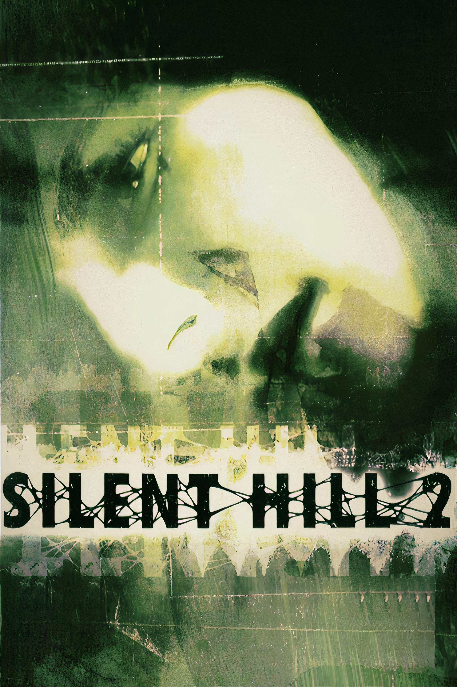
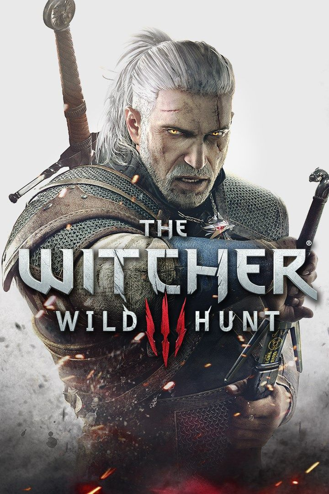
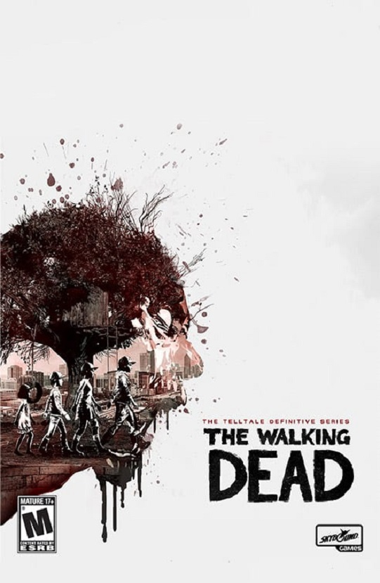
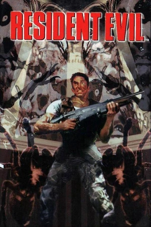

Minha trajetória:
Meu nome é Vinícius de Quadros, tenho 23 anos e sou desenvolvedor de jogos brasileiro.
Desde sempre fui apaixonado por jogos, mas comecei de fato a entender o mundo de desenvolvimento de jogos
alguns anos atrás (mais especifiamente em 2021) utilizando a plataforma "Snap!".
Meus Jogos Favoritos:




